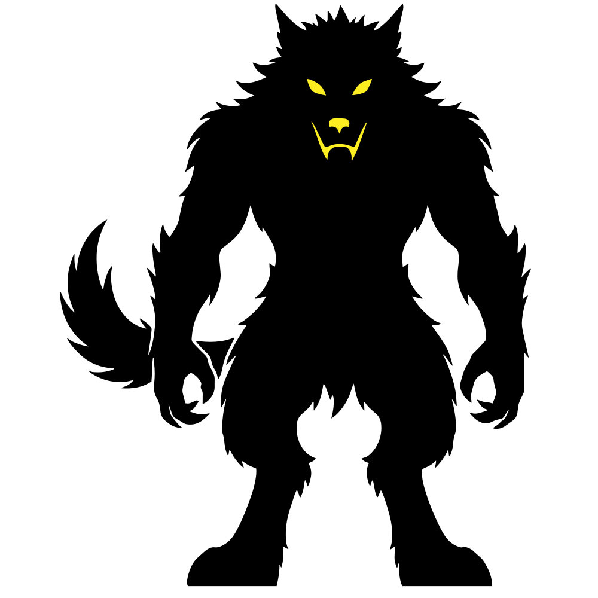

Syarat Bermain
- Minimal 4-8pemain
- Durasi: 15-60 menit
- Usia: 8+ tahun
Karakter dalam Permainan Werewolf
Moderator
membagi peran, mengatur alur, dan mengumumkan hasil
Werewolf
Membunuh pemain lain setiap malam. Tujuan: Menghabisi semua warga desa.
Villager
Warga biasa yang harus menebak siapa werewolf untuk Menghabisi semua werewolf.
Seer
Bisa mengecek 1 pemain setiap malam untuk mengetahui identitasnya.
Guardian
Melindungi satu pemain dari serangan werewolf setiap malam.
- Penentuan jumlah werewolf
Untuk permainan dengan ≤ 7 pemain -> 1 werewolf, Untuk ≥ 8 pemain -> bisa menggunakan 2 werewolf. - Malam Hari
Semua pemain menutup mata. Moderator memanggil: "Werewolf, buka mata dan pilih satu korban." Setelah werewolf memilih, moderator akan menyuruh werewolf menutup mata kembali. Kemudian moderator memanggil: "Seer, buka mata dan tunjuk satu orang untuk diperiksa." Selanjutnya moderator memanggil: "Guardian, buka mata dan pilih satu pemain untuk dilindungi." Jika guardian melindungi pemain yang diserang werewolf, maka pemain itu selamat. - Pagi Hari
Semua dibangunkan moderator. Moderator mengumumkan siapa korban malam tadi (jika tidak dilindungi guardian). Korban wajib diam dan tidak ikut berdiskusi. Pemain yang masih hidup berdiskusi, saling tuduh-menuduh, dan kemudian memilih satu orang melalui voting untuk dieliminasi. - Kelanjutan & Kemenangan
Jika yang dieliminasi adalah werewolf -> villager menang. Jika yang dieliminasi bukan werewolf -> permainan berlanjut dengan malam -> siang -> dst. Jika jumlah werewolf ≥ jumlah pemain bukan werewolf -> werewolf menang.